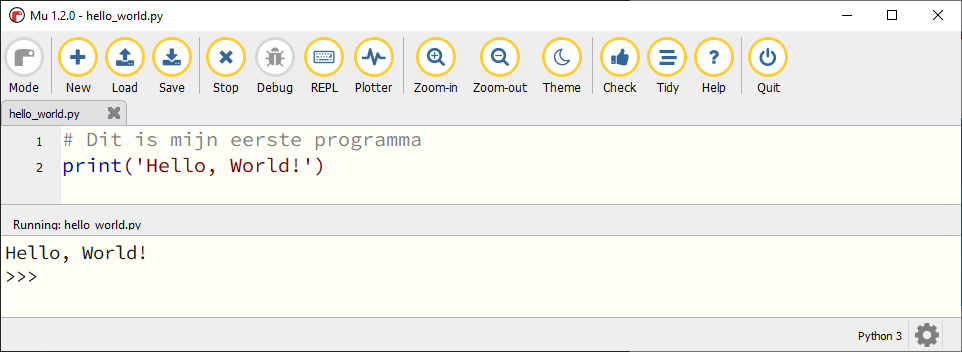
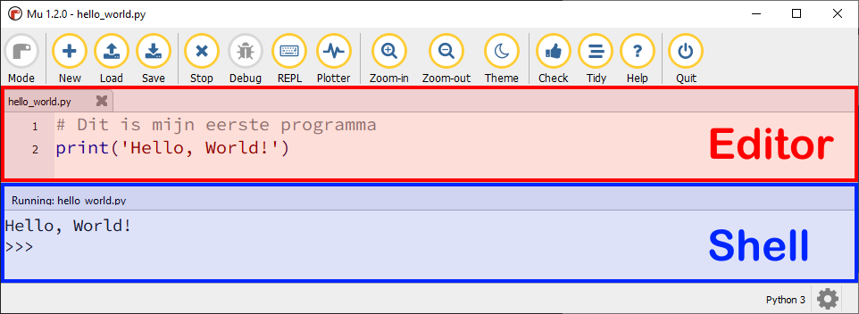
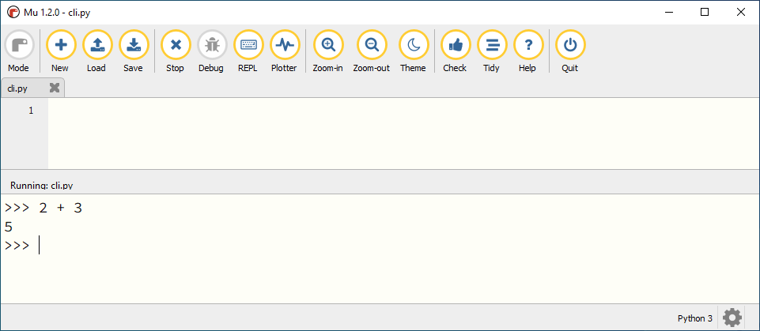
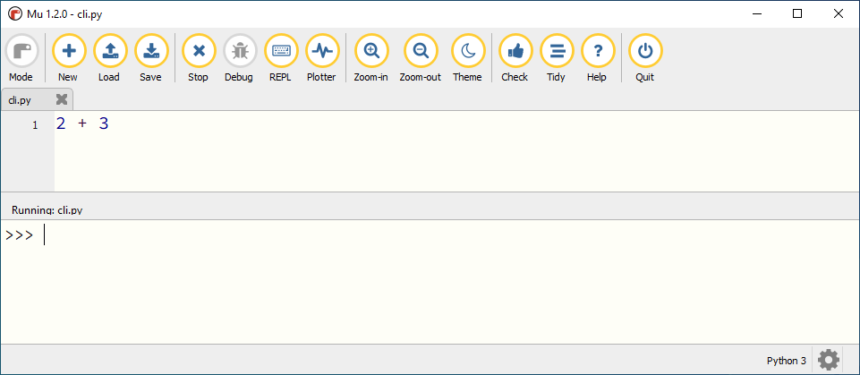
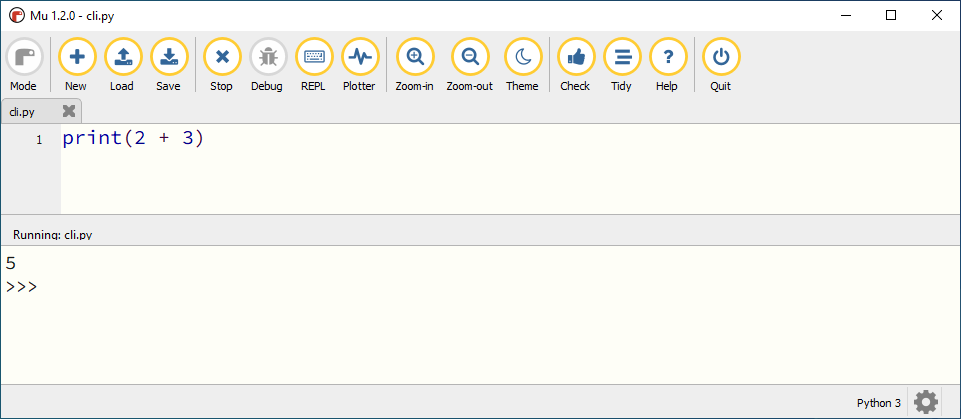

2. Editor en Shell#
Mu editor is een zogenoemde IDE (Integrated Development Environment): een programmeeromgeving waarin je code kunt typen, bewerken en uitvoeren. Er zijn echter twee plekken waar je code kunt typen:
In een
.pybestand in het editor venster.In de shell, om rechtstreeks met Python te communiceren.
Wat leer je in dit hoofdstuk
Hoe gebruik je in Mu editor de shell.
Wat is het verschil tussen werken in de editor en in de shell.
2.1. Shell in Mu editor#
Eerder maakte je het eenvoudige programma Hello, World! Dat programma bestond uit twee regels code, die je typte in het editor venster en opsloeg in het bestand hello_world.py. Toen je op de Run knop klikte, verscheen onderin Mu editor een tweede venster dat de output van je code toonde:

Onder de output Hello, World! heb je wellicht de drie >>> symbolen opgemerkt. Dit is de zogenoemde prompt, die aangeeft dat je directe commando’s aan Python kunt geven. Dat is de shell.

Zoals je ziet, verschijnt de shell pas wanneer je een programma runt. Om die reden ga je nu een leeg programma maken.
Klik op de New knop om een nieuw codebestand te starten. Verwijder de regel # Write your code here :-), zodat het bestand helemaal leeg is en sla het vervolgens op onder de naam blank.py in je Documenten/Python Projecten map.
Klik op de Run knop om je lege codebestand uit te voeren. De CLI verschijnt en verder gebeurt er uiteraard niets.
Maar als je nu achter de Python prompt >>> bijvoorbeeld de som 2 + 3 typt en op Enter drukt, geeft Python direct antwoord:

2.2. Verschillen tussen editor en shell#
Hieronder zie je de belangrijkste verschillen tussen het gebruik van de editor en de shell:
Voor programma’s van meerdere coderegels.
Code wordt uitgevoerd wanneer je op Run klikt.
Code kun je opslaan.
Gebruik je om een programma te maken.
Voor één coderegel per keer.
Code wordt uitgevoerd zodra je op Enter drukt.
Code kun je niet opslaan.
Gebruik je om snel iets te testen.
Er is nog een - wellicht minder opvallend - verschil tussen de werking van de editor en de shell. Probeer het volgende maar eens:
Klik op Stop om de uitvoering van
blank.pyte stoppen.Typ in de editor
2 + 3.Klik op Run.
Je zou verwachten dat de uitkomst van de berekening 2 + 3 verschijnt, maar dat gebeurt niet:

Om de uitkomst van de berekening te tonen, moet je print(2 + 3) gebruiken:

Waarschijnlijk heb je al hebt gemerkt dat print() een commando is om iets op het scherm af te drukken, zoals Hello, World! of 5. In de shell hoef je print() echter niet te gebruiken, omdat de shell dat zelf al doet. Maar in de editor is het wél nodig.
Niet vergeten
Verwijder alle code uit blank.py en sla het bestand op voordat je verder gaat. Zo heb je de volgende keer weer een schoon bestand voor je shell experimenten.